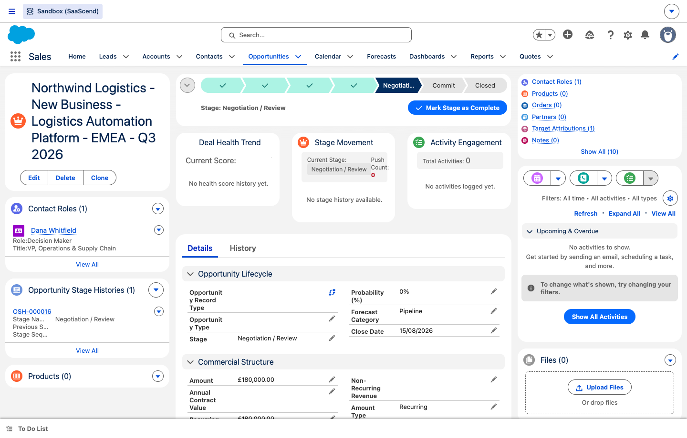
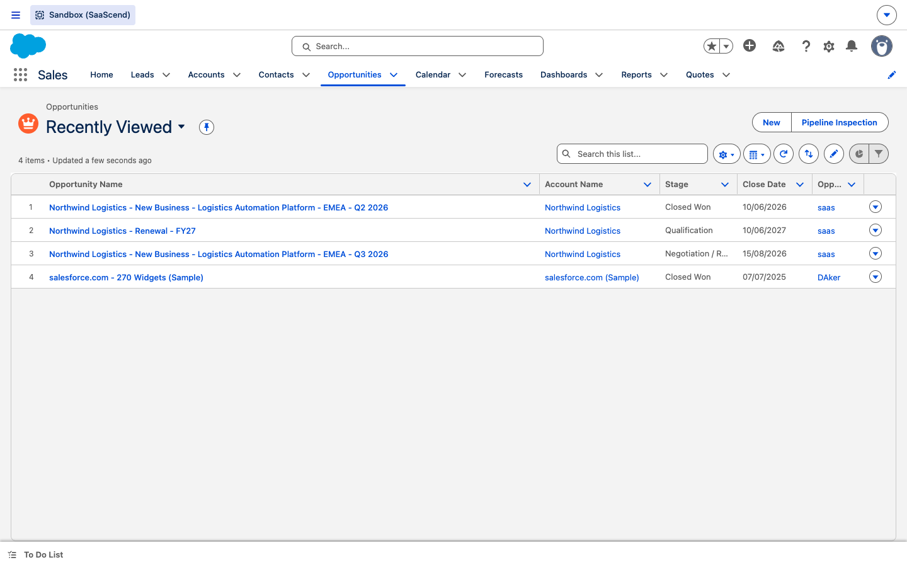
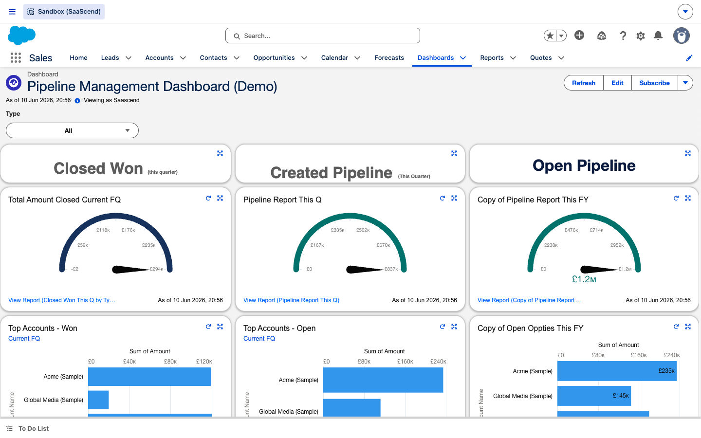
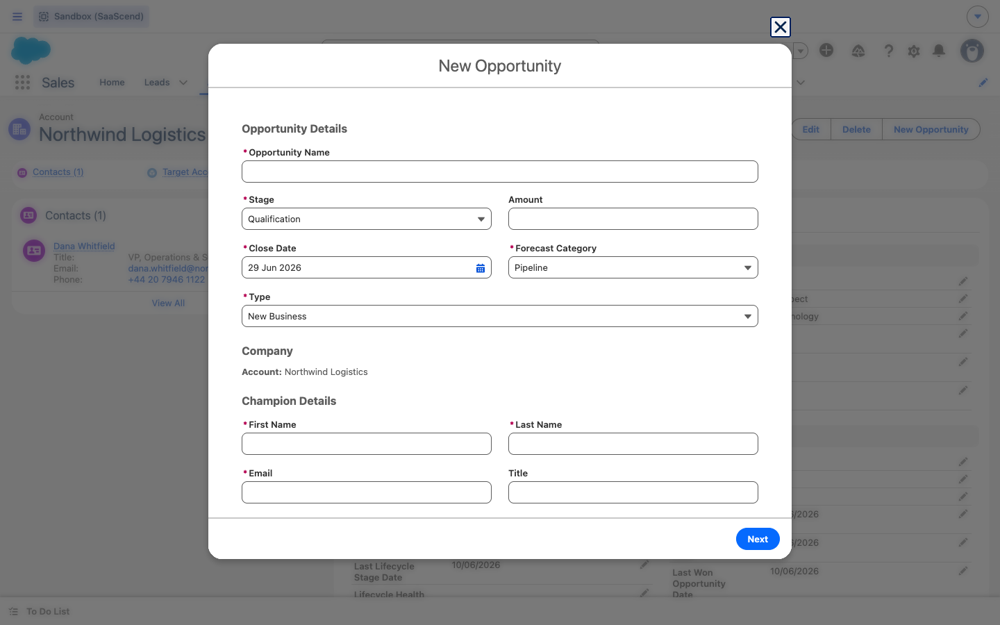

New to Salesforce? Start here. Learn the screen, the jargon, and exactly what the system does for you — mapped to the journey a customer travels, from first touch to renewal. Follow one real deal through all seven stages of the bowtie.
Before the journey, three things every first-time user needs: how to read a record, how to get around, and what the acronyms mean.
Click each numbered marker to learn what it is.

Three things you'll use constantly.


Hover any dotted term anywhere in this guide for a definition, or browse them all:
The guided “New Opportunity” button does the heavy lifting. Step through it:

Same record, before and after you hit Save. The system fills the grey fields for you.
The system scores every lead and deal automatically. Play with the inputs and watch the score move — no data is changed in Salesforce.
Each stage: what you do, what fires automatically, the fields that matter, and the mistakes to avoid. Test yourself at the end of each.
Every automation that works for you, by stage. None require launching by hand.
| Stage | Automations |
|---|